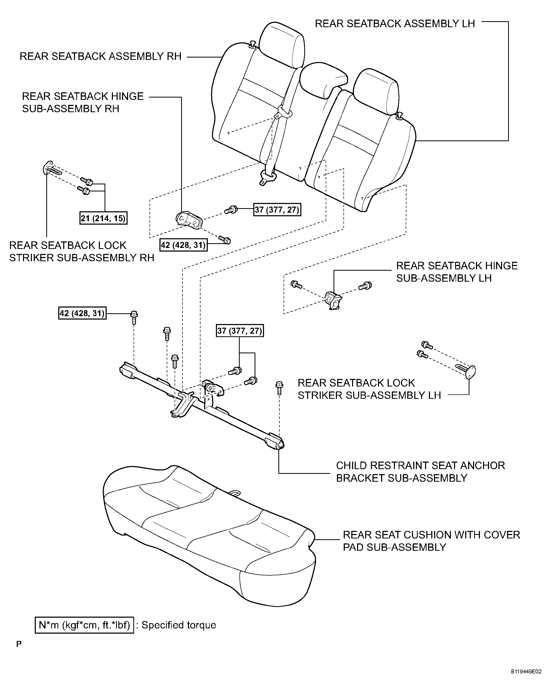
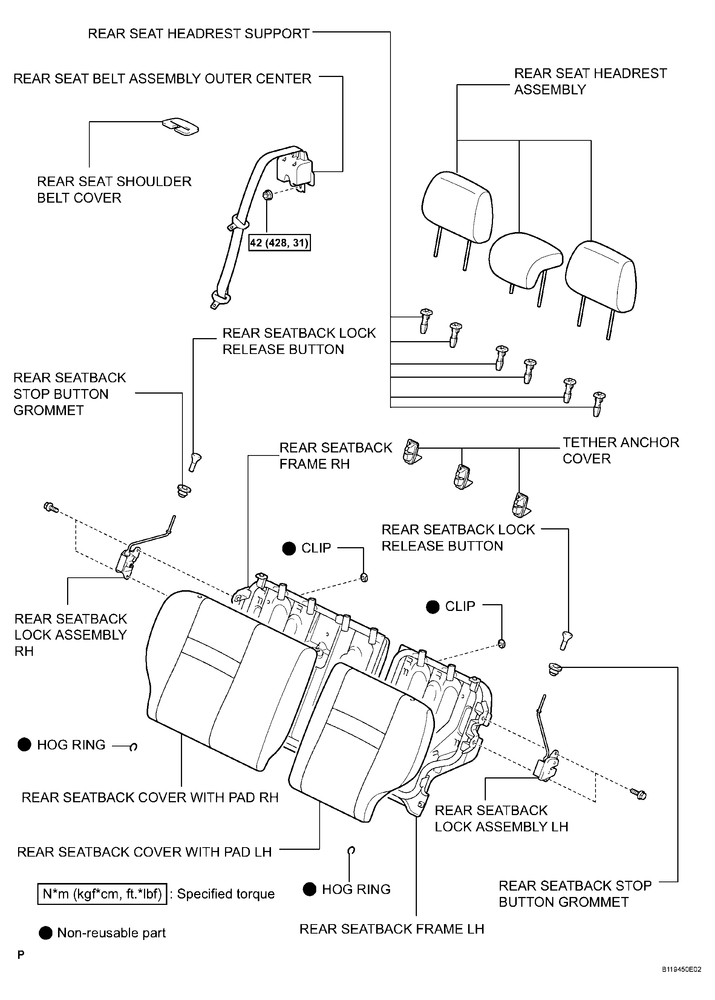

Home
>>
Scion
>>
2006
>>
xB Standard
>>
Repair and Diagnosis
>>
Accessories & Equipment
>>
Seats
>>
Seat
>>
Rear Seat Assembly
>>
Components
Rear Seat Assembly: Components
Fig 1: Locating Rear Seat Assembly Components (1 Of 2)

Courtesy of © TOYOTA, LICENSE AGREEMENT TMS1002
Fig 2: Locating Rear Seat Assembly Components (2 Of 2)

Courtesy of © TOYOTA, LICENSE AGREEMENT TMS1002